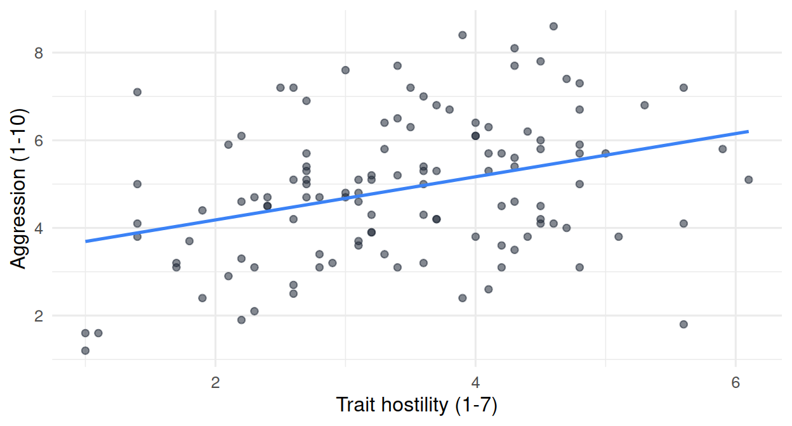
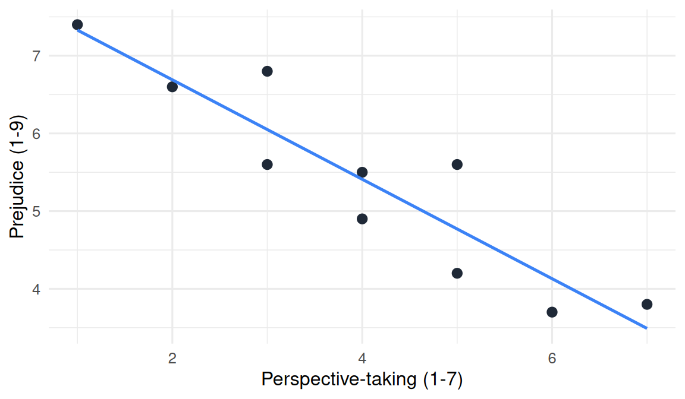

library(tidyverse)
data <- read.csv("data/vgames_study.csv")16 Fitting and interpreting simple regression in R
16.1 Overview
Chapter 15 introduced the simple linear model conceptually: a line with an intercept and a slope, chosen by Ordinary Least Squares so that the sum of squared residuals is as small as possible. This chapter fits and interprets such models in R, with code you can run on your own machine. By the end you will have:
- fitted a regression model with
lm(), - read the most important parts of the
summary()output, - extracted coefficients, predictions, and residuals from the model object,
- computed and interpreted R-squared as a measure of how much better the line is than the mean,
- and seen that the correlation coefficient is the square root of R-squared in simple regression.
The chapter assumes you have the tidyverse loaded and data/vgames_study.csv available:
16.2 Fitting a model with lm()
The R function that fits a linear model is lm(), which stands for linear model. Its basic syntax is
model <- lm(outcome ~ predictor, data = your_data)The tilde ~ is R’s notation for “is modeled as a function of.” The expression aggression ~ hours_weekly reads aloud as “aggression as a function of weekly playing hours.” The function returns a model object, which we typically save to a name.
Fit a model predicting aggression from hours_weekly:
model1 <- lm(aggression ~ hours_weekly, data = data)Nothing prints. The model object is stored in model1. To see the results, use summary():
summary(model1)
Call:
lm(formula = aggression ~ hours_weekly, data = data)
Residuals:
Min 1Q Median 3Q Max
-3.5840 -1.0903 -0.0504 1.1119 3.7732
Coefficients:
Estimate Std. Error t value Pr(>|t|)
(Intercept) 4.19618 0.26987 15.549 < 2e-16 ***
hours_weekly 0.08165 0.02707 3.016 0.00313 **
---
Signif. codes: 0 '***' 0.001 '**' 0.01 '*' 0.05 '.' 0.1 ' ' 1
Residual standard error: 1.556 on 118 degrees of freedom
Multiple R-squared: 0.07159, Adjusted R-squared: 0.06372
F-statistic: 9.099 on 1 and 118 DF, p-value: 0.003133The output has several sections. We walk through them in turn, but with a strict focus on what this chapter cares about. The columns labeled Std. Error, t value, and Pr(>|t|), and the line about the F-statistic at the bottom, all belong to statistical inference: they tell you whether the relationship you see in this sample is likely to hold in a broader population. Inference is a topic for a later section of the book, not this one. For now, ignore those columns. Focus only on the Estimate column and on R-squared.
16.2.1 Reading the Call and the Residuals
The “Call” line restates the model you fit. It is useful when you have many models in a script and want to verify which one you are looking at.
The “Residuals” block reports the min, the quartiles, and the max of the residuals. The median should be near zero (it is approximately −0.05 in our case), and the min and max give a sense of the largest misses. In our data the largest positive residual is about 3.77, meaning one participant scored about 3.77 points higher than the model predicted.
16.2.2 Reading the Coefficients
This is the part of the output you will use most:
Coefficients:
Estimate ...
(Intercept) 4.1962 ...
hours_weekly 0.0816 ...(Intercept)Estimate = 4.20 is the intercept \(b_0\): the predicted aggression score whenhours_weeklyequals 0. Someone who plays zero hours per week is predicted to score about 4.20 on aggression.hours_weeklyEstimate = 0.08 is the slope \(b_1\): the change in predicted aggression for each one-unit increase inhours_weekly. Each additional hour of weekly gaming is associated with a 0.08-point increase in aggression.
The regression equation in our notation is
\[ \widehat{\text{aggression}} = 4.20 + 0.08 \times \text{hours\_weekly}. \]
You read this directly off the Estimate column. The R output and the equation contain exactly the same information.
16.2.3 Reading R-squared
Below the Coefficients block is the line
Multiple R-squared: 0.0716, Adjusted R-squared: 0.0637R-squared is the proportion of variance in the outcome that the model explains. It runs from 0 (the model is no better than the mean-only model from Chapter 14) to 1 (every observation lies exactly on the line). Multiple R-squared in our output is 0.0716, which we read as 7.2 percent: the model with hours_weekly as a predictor explains about 7.2 percent of the variability in aggression scores.
Equivalently, R-squared is defined in terms of two sums of squared residuals: \(SS_{\text{total}}\), the SS of the mean-only model from Chapter 14 (which is 307.76 on this dataset), and \(SS_{\text{residual}}\), the SS of the regression model (which is 285.73 here). Then
\[ R^2 = 1 - \frac{SS_{\text{residual}}}{SS_{\text{total}}} = 1 - \frac{285.73}{307.76} \approx 0.072. \]
This is the same comparison you did in Chapter 14 with SS_grand and SS_group, now expressed as a proportion. The interpretation is the same: how much of the squared error of the mean-only model has the new model removed? Here, about 7.2 percent. The relationship is real but weak; 92.8 percent of the variability remains unexplained.
The “Adjusted R-squared” applies a small penalty for the number of predictors in the model. With one predictor the correction is tiny (0.0637 vs 0.0716). It will matter more in Chapter 17, where models gain predictors, and in Chapter 19, where we discuss why this correction exists.
16.3 Extracting components from the model
The full summary() output is useful for reading, but when you want to use the numbers in further calculations you usually extract them with helper functions.
16.3.1 Coefficients
coef(model1) (Intercept) hours_weekly
4.19617633 0.08164636 The result is a named vector with two elements. To use them individually:
b0 <- coef(model1)[1] # intercept
b1 <- coef(model1)[2] # slope
b0(Intercept)
4.196176 b1hours_weekly
0.08164636 With \(b_0\) and \(b_1\) saved, you can plug values of the predictor into the equation directly. For someone who plays 15 hours per week:
b0 + b1 * 15(Intercept)
5.420872 About 5.4. For someone who plays 30 hours per week:
b0 + b1 * 30(Intercept)
6.645567 About 6.6. These are the model’s predictions; they are not the actual aggression scores of any specific person.
16.3.2 Predicted values and residuals
The functions predict() and resid() return the prediction and residual for every observation in the dataset that the model was fitted to (one value per row).
predicted <- predict(model1)
residuals <- resid(model1)
head(predicted) 1 2 3 4 5 6
4.694219 4.481939 5.363719 5.045298 5.518847 4.400292 head(residuals) 1 2 3 4 5 6
-0.49421912 0.01806141 -1.56371925 0.35470154 1.18115267 -0.20029223 A quick sanity check. The first participant has hours_weekly = 6.1. The model’s prediction is
b0 + b1 * 6.1(Intercept)
4.694219 which matches predicted[1] up to rounding. The first participant scored aggression = 4.2, so the residual is
4.2 - predict(model1)[1] 1
-0.4942191 which matches residuals[1].
Two important checks on the residuals:
sum(residuals) # should be approximately 0[1] 6.470519e-16sum(residuals^2) # the SS_residual; should be about 285.73[1] 285.7315The residuals sum to (essentially) zero, exactly as in Chapter 14. The sum of squared residuals is 285.73, the same number we used above to compute R-squared.
16.3.3 Adding predictions and residuals to your data
In practice it is often useful to attach these as new columns of the original data frame, using the mutate() function you learned in Chapter 9:
data <- data |>
mutate(predicted = predict(model1),
residual = resid(model1))
data |>
select(participant_id, hours_weekly, aggression, predicted, residual) |>
head(5) participant_id hours_weekly aggression predicted residual
1 1 6.1 4.2 4.694219 -0.49421912
2 2 3.5 4.5 4.481939 0.01806141
3 3 14.3 3.8 5.363719 -1.56371925
4 4 10.4 5.4 5.045298 0.35470154
5 5 16.2 6.7 5.518847 1.18115267Now every row carries the model’s prediction and the participant’s residual. This makes it easy to find unusual cases, plot residuals, or compute further quantities from them.
16.4 A second model
The choice of predictor is up to you. Suppose, instead of hours_weekly, we use trait_hostility:
model2 <- lm(aggression ~ trait_hostility, data = data)
summary(model2)
Call:
lm(formula = aggression ~ trait_hostility, data = data)
Residuals:
Min 1Q Median 3Q Max
-4.1556 -1.1862 0.1216 0.9434 3.2815
Coefficients:
Estimate Std. Error t value Pr(>|t|)
(Intercept) 3.1982 0.4506 7.098 1.02e-10 ***
trait_hostility 0.4924 0.1249 3.942 0.000137 ***
---
Signif. codes: 0 '***' 0.001 '**' 0.01 '*' 0.05 '.' 0.1 ' ' 1
Residual standard error: 1.518 on 118 degrees of freedom
Multiple R-squared: 0.1164, Adjusted R-squared: 0.1089
F-statistic: 15.54 on 1 and 118 DF, p-value: 0.0001374Reading the same lines as before:
- Intercept = 2.45. The model predicts an aggression score of about 2.45 for someone with
trait_hostility = 0. (Zero is outside the scale’s range of 1-7, so this is an extrapolation; the intercept is mathematically necessary but does not correspond to a real person.) - Slope of
trait_hostility= 0.61. Each one-point increase in trait hostility is associated with a 0.61-point increase in aggression. - Multiple R-squared = 0.116. Trait hostility explains about 11.6 percent of the variability in aggression.
Trait hostility is a stronger predictor of aggression than weekly playing hours (11.6 percent of variance explained vs. 7.2 percent). The slope (0.61) is also much larger than the slope of hours_weekly (0.08), though strictly speaking the two slopes are on different scales (per point of a 1-7 trait vs per hour per week of gaming) and so a direct numerical comparison of slopes is not meaningful. The R-squared values are directly comparable, however, and tell the same story.

The scatterplot shows the upward trend more clearly than the analogous picture for hours_weekly: the cloud tilts upward more sharply, and R-squared confirms this numerically.
16.5 Correlation as a special case of regression
You may have heard of the correlation coefficient, usually written \(r\), before this book. It is the standardized measure of linear association between two continuous variables, running from −1 (perfect negative linear relationship) to +1 (perfect positive linear relationship), with 0 meaning no linear relationship.
A useful fact: in simple regression, the correlation coefficient equals the square root of R-squared, with the sign of the slope. To see this:
cor(data$aggression, data$hours_weekly)[1] 0.2675591sqrt(0.0716) # R-squared from model1[1] 0.2675818The two numbers agree (up to rounding). The same for the trait-hostility model:
cor(data$aggression, data$trait_hostility)[1] 0.3411248sqrt(0.116)[1] 0.3405877This means correlation and simple regression are not different techniques. They are the same machinery, presented in two different ways. When you compute a correlation, you are implicitly fitting a line. The intercept and slope are not reported because they are not in standardized form, but the line is there.
This identity holds exactly for simple regression (one predictor). Once you add a second predictor (Chapter 17), the connection becomes more subtle, and R-squared is no longer the square of any single correlation.
16.6 Worked example: an outside dataset
To consolidate the workflow, here is a worked example on a small, made-up dataset. A researcher recruits 10 participants, measures their perspective-taking ability on a 1-7 scale (higher means better perspective-taking), and measures their prejudice on a 1-9 scale.
example <- data.frame(
participant = 1:10,
perspective_taking = c(2, 3, 1, 5, 4, 6, 3, 7, 5, 4),
prejudice = c(6.6, 5.6, 7.4, 5.6, 4.9, 3.7, 6.8, 3.8, 4.2, 5.5)
)
fit <- lm(prejudice ~ perspective_taking, data = example)
summary(fit)
Call:
lm(formula = prejudice ~ perspective_taking, data = example)
Residuals:
Min 1Q Median 3Q Max
-0.570 -0.445 -0.010 0.255 0.830
Coefficients:
Estimate Std. Error t value Pr(>|t|)
(Intercept) 7.97000 0.43050 18.51 7.47e-08 ***
perspective_taking -0.64000 0.09876 -6.48 0.000192 ***
---
Signif. codes: 0 '***' 0.001 '**' 0.01 '*' 0.05 '.' 0.1 ' ' 1
Residual standard error: 0.5409 on 8 degrees of freedom
Multiple R-squared: 0.84, Adjusted R-squared: 0.82
F-statistic: 41.99 on 1 and 8 DF, p-value: 0.0001921Reading the output:
- Intercept ≈ 7.97. Predicted prejudice for a participant scoring 0 on perspective-taking (an extrapolation outside the 1-7 scale; the model gives an answer, but it is not a meaningful prediction).
- Slope ≈ −0.64. Each one-point increase in perspective-taking is associated with a decrease of 0.64 points in prejudice. The negative slope tells us this is an inverse relationship: better perspective-taking, lower prejudice.
- R-squared ≈ 0.84. Perspective-taking explains 84 percent of the variance in prejudice in this (very small) sample. By any standard, that is a strong relationship.
A prediction for a participant with perspective_taking = 5:
coef(fit)[1] + coef(fit)[2] * 5(Intercept)
4.77 About 4.77. If that participant actually scored 5.6 on prejudice (as participant 4 in the data), their residual is 5.6 − 4.77 ≈ 0.83: they were more prejudiced than the model predicted, given their perspective-taking score.
A scatterplot makes the relationship visible:

16.7 Looking ahead
You can now fit and interpret a simple regression: one outcome, one continuous predictor. Chapter 17 generalizes this in two directions: adding more predictors (multiple regression) and allowing predictors to be categorical (a t-test will turn out to be a regression with one dummy-coded predictor). Chapter 18 then introduces moderation, where the slope of one predictor depends on the value of another, and shows how to read interaction terms in the lm() output.
16.8 Check your understanding
1. What does lm() do?
2. In the row of the summary() output corresponding to a predictor, what does the Estimate** column report?**
3. What does R-squared measure?
4. Which function gives you the intercept and slope from a fitted model object?
5. What does predict(model) return when called with no newdata argument?
6. What is true of the residuals from an OLS regression?
7. What is the relationship between correlation r and R-squared in simple regression?
8. What is “Adjusted R-squared”?
16.9 References
Navarro, D. J. (2018). Learning statistics with R: A tutorial for psychology students and other beginners (Version 0.6), Chapter 15. https://learningstatisticswithr.com